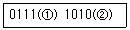
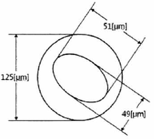
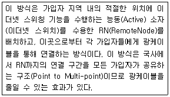
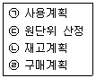

통신설비기능장 (2018-03-10 기출문제)
1과목: 임의 과목 구분(20문항)
1. 다음 중에서 마이크로 웨이브 전송에 장점에 해당되지 않는 것은?
- 안테나를 소형으로 제작 가능
- 광대역 전송 가능
- 보안에 강함
- 회선 구성의 융통성과 용이성이 큼
(정답률: 79%)

2. 데이터 비트가 4비트이고 패리티 비트가 1개 일때 홀수 패리티 체크가 되도록 ①과 ②를 채우면?

- 0, 0
- 0, 1
- 1, 0
- 1, 1
(정답률: 92%)
3. 다음 전송 제어 문자(TCC) 중에서 전송의 종료 및 데이터 링크의 해제를 알리는 제어 문자는?
- ETX
- ETB
- EOT
- DLE
(정답률: 84%)
4. 시간폭과 진폭이 일정한 펄스의 위치를 입력 신호에 따라 변화시키는 변조 방식은?
- PAM
- PCM
- PPM
- PWM
(정답률: 72%)
5. 다음 중 디지털 변조방식에서 반송파의 주파수를 변화시키는 FSK의 특징이 아닌 것은?
- 비동기검파를 이용하는 경우에는 FSK모뎀 구현이 매우 간단하다.
- FSK신호는 직교신호이어야 한다.
- 전송 점유대역폭이 커서 주파수 사용 효율이 떨어진다.
- 선형 변조이므로 비선형변조방식에 비해 신호분석이 어렵다.
(정답률: 67%)
6. 50[Baud]의 통신 속도를 100[Baud]로 향상 시켰다면 단위 펄스의 시간 길이는 얼마로 변하는가?
- 10[ms]
- 20[ms]
- 30[ms]
- 40[ms]
(정답률: 50%)
7. 다음 중 베이스밴드 전송(Baseband Transmission)방식에 대한 설명으로 틀린 것은?
- 디지털 전송방식으로 데이터를 부호화하여 신호를 변조하지 않고 그대로 전송하는 방식이다.
- 전송매체를 효율적으로 사용할 수 없는 단점 때문에 컴퓨터 주변기기 간의 통신이나 LAN 등 비교적 가까운 거리에서만 사용한다.
- 전송부호의 종류에는 RZ, NRZ, AMI(Bipolar), Manchester, CMI 등이 있다.
- 협대역으로 저속전송에 사용되고 있다.
(정답률: 71%)
8. 다음 중 양자화 잡음의 개선책이 아닌 것은?
- 양자화 계단을 크게 한다.
- 양자화 계단수를 증가시킨다.
- 비선형 양자화를 행한다.
- 압신기를 사용한다.
(정답률: 76%)
9. 전송하고자 하는 총 비트 수가 20개일 때 해밍비트 수는 얼마인가?
- 2비트
- 3비트
- 4비트
- 5비트
(정답률: 76%)
10. 다음 중 펄스코드변조(PCM)에 대한 설명으로 맞는 것은?
- 양자화 → 표본화 → 부호화 과정을 거친다.
- 양자화 잡음(오차)를 방지하기 위하여 양자화 스텝(Step) 수를 감소시킨다.
- 표본화란 신호에 대한 시간적인 이산화 과정이다.
- 부호화란 신호에 대한 진폭의 이산화 과정이다.
(정답률: 70%)
11. 다음 중 SSB 송신기가 DSB 송신기와 비교할 때 장･단점이 아닌 것은?
- S/N비가 개선된다.
- 회로구성이 간단하다.
- 비화통신이 가능하다.
- 점유주파수 대역폭이 좁다
(정답률: 63%)
12. 다음 중 AM방식과 비교한 FM방식의 장･단점으로 옳지 않은 것은?
- 소비전력이 적다.
- 선택도가 우수하다.
- 충실도가 높다.
- 이득이 낮아도 된다.
(정답률: 80%)
13. 다음 중 대역확산(Spread Spectrum) 통신 시스템의 특징이 아닌 것은?
- CDMA는 데이터를 아날로그한 후 전체 대역폭에 걸쳐 확산시킨다.
- 부호분할 다중접속 기능을 가진다.
- 다중경로(Multipath)현상을 극복할 수 있다.
- 근원 간섭문제(Near Far Interference)가 발생된다.
(정답률: 60%)
14. 다음 중 FM수신기에서 진폭 제한기에 대한 설명으로 잘못된 것은?
- 충격성 잡음의 영향을 경감할 수 있다.
- 혼신이나 잡음으로 생긴 진폭변조 성분을 제거하는 목적으로 사용된다.
- 일정 레벨 이상의 신호를 제한한다.
- 중간주파 증폭기의 앞 단에 접속된다.
(정답률: 80%)
15. 다음 중 초단파대용(VHF) 안테나로 적합하지 않은 것은?
- Yagi 안테나
- Whip 안테나
- λ/4 수직접지 안테나
- Helical 안테나
(정답률: 72%)
16. 다음 중 위성통신의 관제국에 대한 설명으로 맞는 것은?
- 궤도상을 선회하고 있는 통신위성을 원격제어하기 위한 제어전용 지상국이다.
- 지상에 설치된 유무선 통신시스템 및 사용자와 위성통신체 간을 연결하여 통신서비스를 제공하는 역할을 수행한다.
- 국내 유무선 통신회선으로부터 오는 신호를 다중화 시스템으로 다중화한 후 송신기를 통하여 위성으로 송출한다.
- 안테나와 중계기의 핵심통신 장비 및 버스(Bus)로 구성되어진다.
(정답률: 71%)
17. 다음은 위성지구국 송신기의 체계도에 대한 설명이다. 순서가 올바르게 나열된 것은?
- 지상계 IF → 변조 → 다중화 → 고전력증폭기(HPA) → RF MUX → 안테나
- 지상계 IF → 다중화 → 변조 → 저잡음증폭기(LNA) → RF MUX → 안테나
- 지상계 IF → 변조 → 다중화 → 저잡음증폭기(LNA) → RF MUX → 안테나
- 지상계 IF → 다중화 → 변조 → 고전력증폭기(HPA) → RF MUX → 안테나
(정답률: 77%)
18. 다음 중 통신위성에 설치하는 안테나가 아닌것은?
- 파라볼라 안테나
- 혼 안테나
- 무지향성 안테나
- 루프 안테나
(정답률: 81%)
19. 루프(Loop) 안테나는 어떤 지향성을 갖는가?
- 단방향 지향성
- 전방향 지향성
- 8자 지향성
- 무지향성
(정답률: 85%)
20. 다음 중 나이퀴스트(Nyquist) 표본화 주파수는? (단, fs : 표본화 주파수, fm : 신호의 최고 주파수)
- fs = 2fm
- fs < fm
- fs ≥ fm
- fs ≤ 3fm
(정답률: 84%)
2과목: 임의 과목 구분(20문항)
21. 다음 중 FM복조기에 사용되는 PLL회로의 기본적인 구성요소가 아닌 것은?
- 샘플링 회로
- 위상 비교기
- 저역통과 필터
- 전압제어발진기
(정답률: 67%)
22. 다음 중 도로교통 상황을 실시간으로 파악하여 도로 교통관리를 효율적으로 수행하기 위해 사용하는 우리나라 지능형교통정보시스템(ITS)은?
- 첨단교통정보시스템(ASTIS)
- 첨단대중교통시스템(APTS)
- 첨단화물운송시스템(CVO)
- 첨단교통관리시스템(ATMS)
(정답률: 85%)
23. OSI 7 Layer 중 데이터링크 레이어에서 사용하는 데이터 단위를 무엇이라고 하는가?
- 패킷
- 프레임
- 비트
- 세그먼트
(정답률: 82%)
24. 다음 중 IPv6에서 사용되는 주소 유형 형식으로 틀린 것은?
- 유니캐스트(Unicast)
- 애니캐스트(Anycast)
- 멀티캐스트(Multicast)
- 브로드캐스트(Broadcast)
(정답률: 81%)
25. 네이트워크를 통해 네트워크시스템 자원을 오용하거나 비정상적인 행위로 데이터를 훼손하거나 서비스 불능 상태로 만드는 외부의 침입에 대한 보안 위협들을 탐지하기 위한 것은?
- Distributed DoS
- Intrusion Detection System
- Virtual Private Network
- Denial of Service
(정답률: 75%)
26. 각 노드에서 데이터 송수신을 제어하기 위해 토큰(Token)을 사용하는 네트워크 토폴로지(Topology)는?
- 망형(Mesh)
- 트리형(Tree)
- 링형(Ring)
- 성형(Star)
(정답률: 78%)
27. 다음 중 어플리케이션 수준 방화벽의 장점이 아닌 것은?
- 프록시가 외부에서 내부 호스트로 직접 접근하는 것을 막는다.
- 필요할 경우, 부가적인 인증 시스템을 통합할 수 있다.
- 외부네트워크와 내부네트워크의 경계선 방어가 제공된다.
- 속도가 빠르고 투명성이 보장된다.
(정답률: 76%)
28. 회사에서 하루 동안 발생된 전체 호(Call) 수는 120이고, 통화 완료된 호 수가 90이라면 통화 완료율은?
- 25[%]
- 50[%]
- 75[%]
- 100[%]
(정답률: 88%)
29. 다음 중 ICMP 프로토콜에 대한 설명으로 적합하지 않은 것은?
- 네트워크 컴퓨터 상에서 오류 메시지를 전송하는데 사용한다.
- 오류보고 및 수정의 기능이 없는 IP의 단점을 보완하기 위해 개발되었다.
- 메시지의 형태는 동일한 형식을 사용한다.
- 메시지 전송에 따른 신뢰성을 고려하지 않는다.
(정답률: 55%)
30. TCP 헤더의 플래그 비트에서 긴급데이터를 전송하기 위해 사용하는 것은?
- URG
- ACK
- RST
- FIN
(정답률: 77%)
31. 표준 적용범위에 따른 분류 기준이 다른 것은?
- 국제표준
- 지역표준
- 사실표준
- 단체표준
(정답률: 83%)
32. 다음 중 비동기 전송모드(ATM)에서 셀(Cell)의 크기는 얼마인가?
- 5[Byte]
- 48[Byte]
- 53[Byte]
- 64[Byte]
(정답률: 74%)
33. 다음 중 분포정수회로에서 1차 정수에 해당되는 것은?
- 감쇠정수(α)
- 위상정수(β)
- 인덕턴스(L)
- 특성임피던스(Zo)
(정답률: 81%)
34. 다음 중 UTP 케이블에서 선을 꼬아서 만드는 주된 이유는?
- 중계기 없이 먼 곳으로 신호를 전송하기 위하여
- 외부적 간섭과 누화 현상을 줄이기 위하여
- 케이블의 길이를 줄여 비용을 절감하기 위하여
- 유지보수시 케이블 구분을 쉽게 하기 위하여
(정답률: 89%)
35. 다음 중 아날로그 방식의 라디오나 텔레비전 방송에 사용되고 컴퓨터 시스템에서 고속 데이터 전송에 가장 적합한 통신케이블은?
- 나선케이블
- 동축케이블
- UTP케이블
- 스크린케이블
(정답률: 82%)
36. 다음 그림의 광섬유 코어의 비원율을 계산하여 광섬유 케이블이 선로 포설용으로 가능한지 여부에 대한 설명으로 옳은 것은?(단, 클래딩의 직경은 125[μm]이고, 코어경이 찌그러져 최대 직경이 51[μm]이고, 최소 직경은 49[μm], 광섬유 심선의 코어의 표준 규격 직경은 50[μm]이다.)

- 비원율 : 7[%], 코어의 허용 비원율은 10[%] 미만으로 불가능하다.
- 비원율 : 6[%], 코어의 허용 비원율은 9[%] 미만으로 가능하다.
- 비원율 : 5[%], 코어의 허용 비원율은 7[%] 미만으로 불가능하다.
- 비원율 : 4[%], 코어의 허용 비원율은 5[%] 미만으로 가능하다.
(정답률: 80%)
37. 광송신기의 출력이 -3[dBm]이고, 광수신기의 수신감도가 -36[dBm]이며, 광섬유의 손실이 1[dB/km]이다. 여기에 접속손실과 광커넥터 손실을 무시한다면, 광전송 시스템이 무중계 전송 가능한 최대 거리는 얼마가 되는가?
- 12[km]
- 33[km]
- 39[km]
- 108[km]
(정답률: 81%)
38. 광섬유의 손실 중 외적인 손실에 해당되지 않은 것은?
- 구조 불완전 손실
- 마이크로 밴딩 손실
- 구부러짐에 의한 손실
- 접속에 의한 손실
(정답률: 69%)
39. 통신선로 누화의 원인이 아닌 것은?
- 정전결합
- 전자결합
- 임피던스 부정합
- 선로상 전파속도의 지연
(정답률: 72%)
40. 다음 중 트위시트 페어 케이블(Twisted Pair Cable)의 특징에 대한 설명으로 틀린 것은?
- 절연된 두 가닥의 구리선이 균일하게 서로 감겨 있는 형태이다.
- 다른 전송매체와 비교하여 거리, 대역폭, 데이터 전송률에 있어 상대적으로 많은 제약점을 가진다.
- 전자장과 쉽게 결합되어 간섭이나 잡음에 강하다.
- 평형케이블(Balanced Cable)이라고 한다.
(정답률: 63%)
3과목: 임의 과목 구분(20문항)
41. 신호 레벨이 -20[dBm], 잡음 레벨이 -59[dBm]일 때 신호대 잡음비는?
- 29[dB]
- 39[dB]
- 49[dB]
- 59[dB]
(정답률: 86%)
42. 특성임피던스가 200[Ω]인 동축케이블의 무손실 선로에서 50[Ω]의 부하를 접속할 때 이 선로의 정재파비는?
- 0.6
- 1.2
- 3.2
- 4
(정답률: 71%)
43. 다음 중 위치기반서비스(LBS : Location Based Service)에 대한 설명으로 틀린 것은?
- 인공위성을 이용하여 GPS와 기지국 정보를 결합한 차세대 위치기반의 서비스이다.
- 위치정보를 이용하여 상품정보, 교통정보, 위치추적정보 등 생활 전반에 걸쳐 다양한 정보제공에 활용되고 있다.
- 교통관련 정보로 운전편의정보, 대중교통정보 경로탐색 및 설정 등이 있다.
- 최소 2개의 GPS위성으로부터 정보를 수신하면 위치파악이 가능하다.
(정답률: 81%)
44. 전파의 단파 주파수 범위에 해당하는 파장 범위는?
- 0.1[m]~1[m]
- 1[m]~10[m]
- 10[m]~100[m]
- 100[m]~1,000[m]
(정답률: 68%)
45. 다음 설명은 FTTH 기술 중 어떤 방식을 설명한 것인가?

- Home Run
- AON
- PON
- Hybrid-PON
(정답률: 74%)
46. 기지국 제어장치(Base Station Controller)에 대한 설명으로 틀린 것은?
- 기지국과 이동통신교환기 사이에 위치하여 기지국 관리 및 제어를 담당한다.
- 단말기와 기지국의 송신출력을 제어한다.
- 셀 간 소프트 핸드오프 수행 및 하드 핸드오프를 결정한다.
- 유니트는 Interface unit, CDMA mod/Demod unit, RF unit 등이 있다.
(정답률: 61%)
47. 다음 중 전송선로에 부정합이 존재할 경우의 현상으로 틀린 것은?
- 반사에 의하여 전송손실의 증가 원인이 된다.
- 불균등 반사 손실을 가져온다.
- 간접누화의 원인이 된다.
- 2선식 음성회선의 경우 명음 안정도가 높아진다.
(정답률: 83%)
48. 초고속 정보통신건물 인증 업무처리 시 구내배선 성능 측정 원칙으로 틀린 것은?
- 구내배선 성능은 EIA/TIA 568B의 채널 측정방법을 적용한다.
- 측정하려는 구내배선 구간 내에 위치한 단자반(배선반) 등은 패치코드 또는 점퍼선 등으로 In/Out 단자를 직결하여 선로를 구성한 후 측정한다.
- 측정하려는 구내배선 구간의 양단에서 패치코드 길이는 1[m] 이상이고, 카테고리5(Cat.5) 이상인 것을 사용한다.
- EIA/TIA 568B에 기준에 라 측정하며, 규정 된 채널성능을 만족하여야 한다.
(정답률: 71%)
49. 다음 중 과학기술정보통신부장관이 방송통신 전문인력을 양성하기 위한 계획을 수립･시행하도록 [방송통신발전 기본법]으로 정하는 사항이 아닌 것은?
- 전문인력 양성사업의 지원
- 전문인력 양성기관의 지원
- 전문인력 양성기관의 운영
- 방송통신기술 자격제도의 정착 및 전문인력 수급 지원
(정답률: 74%)
50. 정보통신설비공사의 감리용역 계약문서에 해당되는 것은?
- 시방서
- 공사입찰 유의서
- 기술용역계약 일반조건
- 공사계약 특수조건 및 산출내역서
(정답률: 70%)
51. 다음 중 과학기술정보통신부장관이 방송통신기술의 진흥을 통한 방송통신서비스 발전을 위하여 시책을 수립･시행하여야 하는 사항이 아닌 것은?
- 방송통신과 관련된 기술수준의 조사, 기술의 연구개발, 개발기술의 평가 및 활용에 관한 사항
- 방송통신 기술협력, 기술지도 및 기술이전에 관한사항
- 방송통신기술의 고도화 및 새로운 방송통신기술의 수출 등에 관한 사항
- 방송통신 기술정보의 원활한 유통을 위한 사항
(정답률: 71%)
52. 다음 중 정보통신공사업자 외의 자가 시공할 수 있는 경미한 공사의 범위로 틀린 것은?
- 간이무선국･아마추어국 및 실험국의 무선설비설치공사
- 연면적 1천 제곱미터 이하의 건축물의 자가유선방송설비･구내방송설비 및 폐쇄회로텔레비젼의 설비공사
- 건축물에 설치되는 5회선 이하의 구내통신선로 설비공사
- 라우터 또는 허브의 증설을 수반하지 아니하는 10회선 이하의 근거리통신망(LAN)선로의 증설공사
(정답률: 63%)
53. 다음 중 홈네트워크 설비 중 홈게이트웨이의 설치에 대한 설명이 틀린 것은?
- 홈게이트웨이는 동작상태와 케이블의 연결상태를 확인할 필요가 없으므로 보이지 않는 공간에 설치해도 된다.
- 홈게이트웨이는 세대단자함 또는 세대통합관리반에 설치할 수 있다.
- 세대단자함 또는 세대통합관리반에 설치되는 홈게이트웨이는 벽에 부착할 수 있어야 하며 동작에 필요한 전원이 공급되어야 한다.
- 홈게이트웨이는 이상전원 발생시 제품을 보호할 수 있는 기능을 내장하여야 한다.
(정답률: 88%)
54. 감리수행에 따른 업무연락 및 문제점 파악, 인원해결, 용지보상지원 기타 필요한 업무를 수행하게 하기 위하여 발주자가 지정한 사람을 무엇이라 칭하는가?
- 용역업자
- 시공자
- 보조감리원
- 지원업무수행자
(정답률: 70%)
55. 품질에 영향을 미치는 4가지 요소(4M)가 아닌것은?
- 관리(Management)
- 설비(Machine)
- 가공방법(Method)
- 작업자(Man)
(정답률: 69%)
56. 지역보전 또는 부분보전과 집중보전을 결합하여 장점을 살리고 결점을 보완하는 보전조직의 형태는?
- 혼합보전
- 예방보전
- 사후보전
- 절충보전
(정답률: 65%)
57. 다음 중 작업방법 연구에 있어서 작업분석에 해당하지 않는 것은?
- 공동작업 분석
- 작업장 배치
- 스톱워치(Stop Watch)법
- 셋업 분석
(정답률: 80%)
58. 자재관리의 자재계획 단계로 가장 적합한 것은?

- ㉠ → ㉡ → ㉢ → ㉣
- ㉡ → ㉠ → ㉣ → ㉢
- ㉢ → ㉠ → ㉡ → ㉣
- ㉣ → ㉢ → ㉡ → ㉠
(정답률: 67%)
59. 다음 중 샘플링 검사에서 검사성질에 의한 분류가 아닌 것은?
- 성능검사
- 파괴검사
- 비파괴검사
- 관능검사
(정답률: 64%)
60. 도수 분포표로 정리된 데이터를 막대그래프로 표시함으로써 수평이나 수직으로 상호 비교가 쉽도록 나타낸 것은?
- 체크시트(Check Sheet)
- 파레토도(Pareto Diagram)
- 특성요인도(Cause and Effect Diagram)
- 히스토그램(Histogram)
(정답률: 78%)